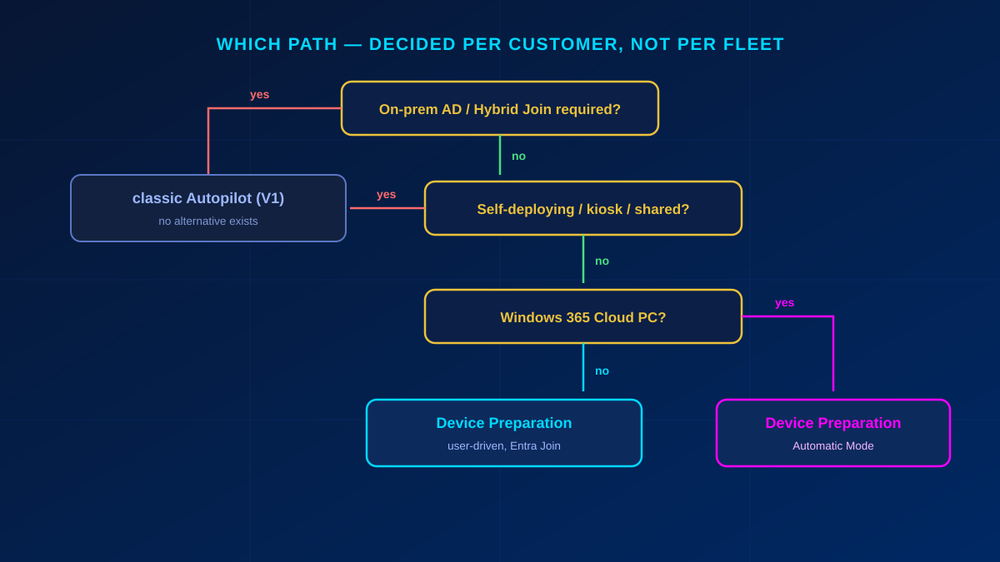

Windows Autopilot now has two provisioning models that look similar from the outside and behave nothing alike underneath. The older one — what practitioners call V1, officially just Windows Autopilot — needs to know a device before it ships: the hardware hash goes into your tenant, the device is matched to a deployment profile, and provisioning happens from there. Device Preparation, the newer model people call V2, needs none of that. Take a laptop out of a retail box, sign in, and it provisions.
That difference decides your entire procurement process, so getting the choice right matters more than getting either one perfectly configured. This is the practitioner version: when each applies, how to set both up, and the specific things that break rollouts.
In short
Hybrid Join, self-deploying or kiosk → classic Autopilot. There is no alternative. Cloud-only, Entra Join, user-driven → Device Preparation. Windows 365 → Device Preparation in Automatic Mode. The decision is made per customer and documented, not defaulted across a fleet. The single most common V2 failure: the Intune Provisioning Client service principal is not an owner of the enrollment-time group, so the policy will not save. And a device already registered in classic Autopilot ignores every Device Preparation policy — classic wins.
Choosing between the two
The decision tree is short, and the first branch is absolute.

- Hybrid Entra Join (on-prem AD) → classic Autopilot. Device Preparation does not do hybrid join. This is not a preference, it is a hard constraint.
- Self-deploying, kiosk or shared devices (no user assignment) → classic Autopilot.
- Cloud-only, Entra Joined, user-driven → Device Preparation.
- Windows 365 Cloud PCs → Device Preparation, Automatic Mode.
Mixed fleets are legitimate. What is not legitimate is picking one as a house default and applying it to every tenant without checking the join type first.
A device already registered as a classic Autopilot device ignores any Device Preparation policy — the classic profile takes precedence. Before a V2 rollout on existing or second-hand hardware, always check registration status and deregister where needed. This is the failure that looks like "the policy just does not apply."
classic Autopilot (V1) end to end
Getting hardware hashes
The standard path is the only one that scales: build the OEM or distributor relationship, register your tenant ID at purchase, and hashes get uploaded into the tenant before the hardware ships. Dell, HP, Lenovo and the large distributors all support this.
The exception path — lab work, a one-off device — is running the script locally as administrator:
md C:\HWHash
Set-Location C:\HWHash
Get-WindowsAutopilotInfo.ps1 -OutputFile AutopilotHWHash.csvManual extraction is error-prone and should never become the routine process. If you find yourself doing this at volume, the procurement channel is the actual problem.
Import and profile
Import under Devices → Enrollment → Windows Autopilot Devices → Import. Allow up to fifteen minutes and refresh before assuming the upload failed.
Then Deployment Profiles → Create profile, with the settings that matter:
- Deployment mode: user-driven (standard) or self-deploying for kiosk and shared devices
- Join type: Microsoft Entra Joined by default; Hybrid Entra Joined only where on-prem AD genuinely requires it
- Privacy settings: hide
- User account type: standard user — local admin rights only with a documented exception
- Device naming template: customer prefix plus a random suffix
Assignment, apps, provisioning
- Assign the profile to a device group or group tag. Never leave it unassigned — an unassigned profile is the most common reason a shipped device provisions as a consumer PC.
- Deploy apps via Apps → Windows → Add (M365 Apps, Defender, line-of-business).
- Configure the Enrollment Status Page: which apps block, the timeout, and what happens on failure.
- Power on. The user signs in with Entra credentials, completes MFA and Windows Hello, and the device joins, enrolls, applies the profile and installs apps.
Device Preparation (V2) end to end
The differences from V1 are the whole point, so this is where the detail belongs.
No pre-registration, but a build requirement
There are no hardware hashes and no import step. In exchange there is a floor on the OS: Windows 11 24H2, or 22H2/23H2 with KB5035942 installed. A device below that will not provision, and the failure is not always obvious from the error.
Enrollment Time Grouping — and the service principal
Device Preparation writes the device into a static security group during enrollment. Two things about that group cause most of the support tickets:
- It must be static, not dynamic. A dynamic group fails assignment, and converting an existing group from static to dynamic afterwards breaks it too.
- The service principal Intune Provisioning Client (AppId
f1346770-5b25-470b-88bd-d5744ab7952c) must be an owner of that group. If it is not, the policy will not save at all.
That second point is, by a wide margin, the most common cause of a failed V2 setup. If the policy refuses to save and the error is unhelpful, check the group owner first.
Limits and identifiers
- Maximum 10 apps and 10 PowerShell scripts are tracked during setup. Anything beyond that installs afterwards, outside the provisioning experience — so put the day-one essentials inside the limit and let the rest follow.
- Upload corporate identifiers (manufacturer, model, serial number) when enrollment restrictions block personal devices. Recommendation: do it always, not only when required — it costs nothing and prevents a class of enrollment rejection that is tedious to diagnose.
Enforcement comes after enrollment
This is the architectural difference that catches people. In Device Preparation, policy enforcement happens after the device is enrolled, not before. Conditional Access and compliance policies therefore have to be in place before the rollout, and they have to tolerate the window in which a brand-new device cannot yet be compliant. A "require compliant device" policy with no allowance for enrollment will block the very process meant to make the device compliant.
What to decide and document per customer
- V1 or V2 — and the reason
- Procurement path: distributor with hash upload, or retail / user-purchased
- Deployment mode: user-driven or self-deploying
- Join type: Entra Joined or Hybrid (V1 only)
- Device naming convention
- Group tag strategy for segmented rollouts (V1)
- Enrollment Status Page and timeout configuration
- App and policy baseline for day one
- Any exceptions granted for local administrator rights
Verification
A rollout is not done until a test device passes all of this:
- OOBE completes without manual intervention beyond entering credentials
- The device appears under Devices → All devices as a corporate device with the correct name
- V1: the Enrollment Status Page runs to completion. V2: the deployment report shows every app and script as Succeeded
- V2: the device landed automatically in the enrollment-time group
- Assigned apps are installed — status messages may lag behind reality
- The device evaluates as compliant and Conditional Access applies correctly
- Join type matches the specification
- No device carries unintended local administrator rights
Pitfalls that actually cost you a day
Device Preparation:
- Missing service principal owner → the policy will not save and the device never joins the group. Check this first, always.
- Dynamic instead of static group → assignment fails; switching an existing group static→dynamic breaks it as well.
- Device still registered in classic Autopilot → the V2 policy silently never applies.
- Known issue — local admin: policy set to "standard user" combined with the Entra setting "registering user is added as local administrator" (Selected/None) causes provisioning to be skipped entirely.
classic Autopilot:
- Missing profile assignment → provisioning fails. Check before the device ships, not after it arrives.
- Manual hash extraction as the routine process → does not scale, high error rate.
- A "dirty" tenant — stale registrations, duplicate hashes. Audit tenant state before a batch onboarding.
Both:
- Apps assigned to the wrong group type (device instead of user, or vice versa) → the status page waits forever.
- A Conditional Access policy blocking enrollment — "device compliance required" collides with the moment the device cannot yet be compliant.
- No internet on first boot → provisioning simply stops.
- The visibility gap: customers consistently overestimate how many of the devices touching company data are actually managed. Inventory before the rollout instead of assuming full coverage.
- Terminology: "V1" and "V2" are community shorthand. Use the official names — Windows Autopilot and Windows Autopilot device preparation — in customer-facing documents.
Bottom line
Device Preparation removes the part of Autopilot that was hardest to operate at scale: knowing every device before it ships. That makes retail and user-purchased hardware viable for the first time. It does not remove hybrid join constraints, it does not cover self-deploying scenarios, and it introduces its own single point of failure in the enrollment-time group. Pick per customer, check the group owner before anything else, and confirm no device is still sitting in classic Autopilot registration.
Glossary
- Windows Autopilot (classic, "V1")
- The original model: the device's hardware hash is registered in the tenant before provisioning, and a deployment profile drives the out-of-box experience.
- Windows Autopilot device preparation ("V2")
- The newer model requiring no pre-registration or hardware hash. Cloud-only and Entra Join, with enforcement applied after enrollment.
- Hardware hash
- A device-unique identifier collected from firmware and uploaded to the tenant so classic Autopilot can recognise the device before first boot.
- Enrollment Time Grouping
- The static security group Device Preparation writes the device into during enrollment. Must be static, and must have the Intune Provisioning Client service principal as owner.
- Intune Provisioning Client
- The service principal (AppId f1346770-5b25-470b-88bd-d5744ab7952c) that must own the enrollment-time group. Missing ownership prevents the policy from saving.
- Enrollment Status Page (ESP)
- The classic-Autopilot screen that blocks sign-in until specified apps and policies have applied, with configurable timeout and failure behaviour.
- Corporate identifiers
- Manufacturer, model and serial number uploaded to Intune so enrollment restrictions can distinguish corporate hardware from personal devices.
- Group tag
- A label on a classic Autopilot device record used to target different deployment profiles at segments of a fleet.
Frequently Asked Questions
What is the difference between Autopilot V1 and V2?
classic Autopilot (V1) requires the device's hardware hash to be registered in the tenant before provisioning and supports hybrid join, self-deploying and kiosk scenarios. Device Preparation (V2) needs no pre-registration or hash, works only cloud-only with Entra Join and user-driven provisioning, and applies enforcement after enrollment rather than before.
When must I still use classic Autopilot?
Whenever Hybrid Entra Join is required, because Device Preparation does not support hybrid join at all, and for self-deploying, kiosk or shared-device scenarios with no user assignment. These are hard constraints, not preferences.
Why will my Device Preparation policy not save?
Almost always because the Intune Provisioning Client service principal (AppId f1346770-5b25-470b-88bd-d5744ab7952c) is not an owner of the enrollment-time security group. Add it as an owner, and confirm the group is static rather than dynamic.
Why is my Device Preparation policy not applying to a device?
Check whether the device is still registered as a classic Autopilot device — the classic profile takes precedence and the Device Preparation policy will silently never apply. Deregister it from Autopilot first. Also verify the build: Windows 11 24H2, or 22H2/23H2 with KB5035942.
How many apps can Device Preparation install during setup?
A maximum of 10 apps and 10 PowerShell scripts are tracked during the provisioning experience. Anything beyond that installs afterwards, so put only day-one essentials inside the limit.
Do I need hardware hashes for Windows Autopilot device preparation?
No. Device Preparation requires no hardware hash and no pre-registration, which is what makes retail and user-purchased devices viable. Corporate identifiers are still recommended where enrollment restrictions block personal devices.